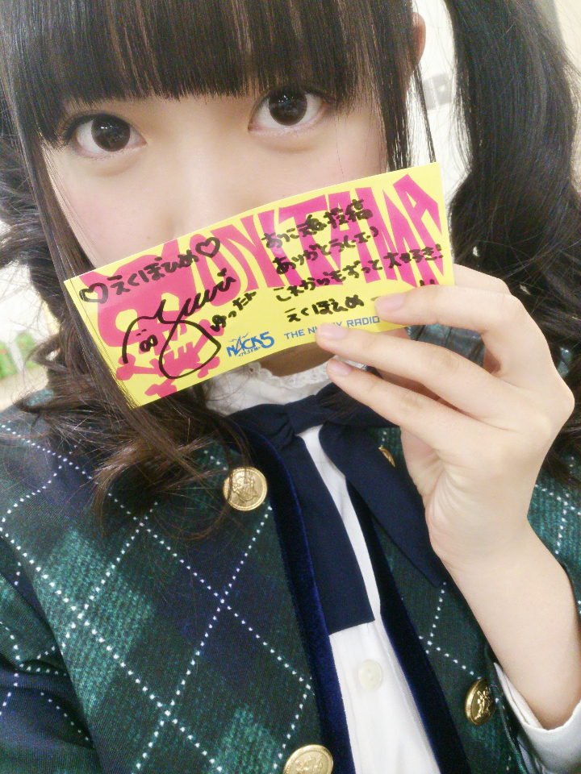
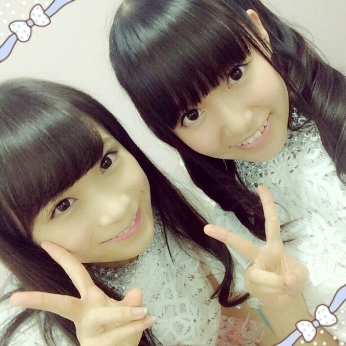
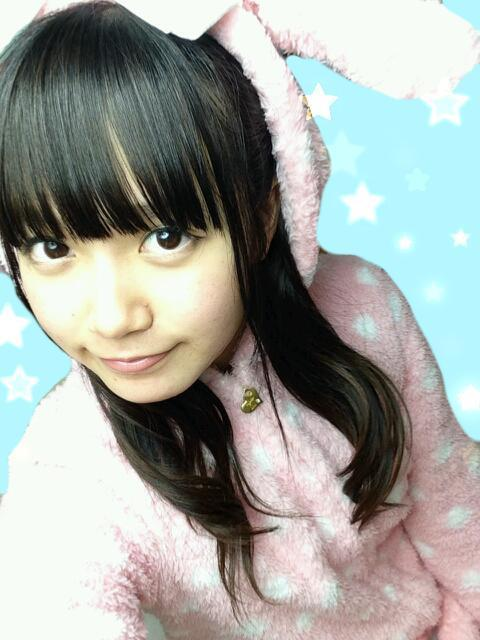

| 2014/11 15 Sat | ひめたん-OoO-その498 |
更新遅くなりました～

おに魂シールどーん♡
ゆったんありがとう(´pωq｀)
嬉しい！大切にします！
みんなもメール送ってゲットしてね～
月刊エンタメさんに
取材していただきました！
ひめたんはアンダーライブのことを
お話してきたよ～＊
今回はいろんなメンバーが
登場するので
楽しみにしててね(＊´ω`＊)
来週は10thシングル
CD特典イベント&ライブ
ひめたんは大阪チームです
参加するよってみなさん
よろしくお願いします！
今回はいままでとは違った形の
イベントになるから
どんな雰囲気なのか楽しみ⊂( ˆoˆ )⊃

まな＊ひめ
uP!!! Presents
加藤ミリヤ・清水翔太
THE BEST 2MAN TOUR 2014
を観に行きました！
ライブはいつもステージに立つ側で
観ることはあまりないので
新鮮な気持ちでした( ˇωˇ )
ジャンルは違うかもしれないけれど
いろんなことを吸収して
帰ったつもりです
ライブは観ててわくわくする
私も会いに来てくださったみなさんの
心を動かすパフォーマンスがしたい。
クリスマスライブがんばります
ありがとうございました！

ぴょーん
スクフェスえりちイベ終わった～
えりち1枚ゲット。満足です( ^o^ )
クリスマスプレゼント企画も
投票結果出たね～♡♡

 ちなみにひめたんは
ちなみにひめたんは
長崎に来たことある？
去年修学旅行で行ったよ\( ˆoˆ )/
カステラもごはんも美味しかった～
陽菜ちゃんのふるさとでもあるよね
大阪のイベント当たったよ
どうやったらひめたんに
見てもらえるかなぁ？
ひめたんコールいっぱいしてほしい♡
みんなのこと頑張って見つけるね！
広島の正月はどんな感じなんだい？
広島特有の食べ物や風習が
あったりするんかな？
広島特有？わかんないけど
おもちはまるかったよ～
ひめたん755始まってから
モバメの数すごく増えましたね
国民想いの姫様ステキです
みんなが待っててくれるなら
いっぱい送るよ～＊
乃木坂に入ってなかったら
友達に...のくだりは意外。
そんなに尖ってたの？
尖ってるってどゆこと(｀・ω・´)笑
うわーこの子自分のことひめたんとか言って
超アイドルしてるーって思ってたら
根は普通の子でしたって話←
ちーちゃんにも言われるし
いろんなひとに言われる♡♡
ひめたんの日記の
コメント欄下２ケタに46を踏んだ方へ
手書きでコメ返するコーナー
＼ ひめたん46 ／

いつもたくさんのコメント
ありがとうございます
最近寒くなってきたね
みんな体調は大丈夫かな？
ひめは昨日から
のどが いがいがいがいがいがいがします
ケア強化しなきゃ(＊´v`＊)♡
みんなも気を付けてね！
(＊´・ω・＊)
コメント(915)
2014/11/15 23:36